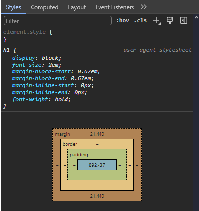

Bölüm 3
CSS Nedir?
CSS (Cascading Style Sheets - Basamaklı Stil Şablonu) kelimelerinin kısaltmasıdır. CSS sayfadaki HTML elemanlarının nasıl gösterileceğini belirtir. CSS bir stil yapılandırma dilidir ve bir programlama dili değildir. CSS web sayfanızın stilini belirtmek için kullandığınız kod'dur. Nasıl bir kuaför saçlarınızı şekillendiriyorsa CSS de HTML elemanlarını şekillendirir.
Örneğin bir web sayfasında tüm paragrafların yazı renginin kırmızı olmasını isterseniz CSS kodunuz şöyle olur:
Bu stil kodu sayfadaki tüm <p> elemanlarının yazı rengini kırmızı
yapacaktır. Bu kodun nereye yazılacağını birazdan göreceğiz. Şimdi biraz kodun
parçalarına bakalım. Üstteki p harfi seçici deyim olarak bilinir ve sayfada
aradığımız elemanları bulmak için kullandığımız kriterdir. Arkasından stil kuralları
dediğimiz satırlar gelir. Bu örnekte bir tane kural var o da color: red;
satırı. Burada color kelimesi stil kodunun özellik kısmıdır, burada
değiştirmek istediğimiz stilin adını gireriz. red ise stil kuralının değer
kısmı, yazının kırmızı olacağını bildiriyor. Yukarıdaki örnekteki gibi seçici, blok ve
içindeki stil kurallarından oluşan sete CSS Kural Seti (CSS Rule Set) adı verilir. Şimdi
bu seti biraz inceleyelim.
Tüm bu yapıya CSS kural seti denir. Bir HTML elemana stil uygularken ilk yapmanız gereken
o elemanı bulup göstermek. Bu örnekte eleman(lar)ı gösterme işini seçici deyim
denen p yapıyor. Örnekte çok basit bir seçici deyim kullanıldı, biraz sonra değişik
seçici deyim örnekleri göreceğiz.
Seçici deyim ardından o elemana ait CSS stil kurallarının listesini içeren bloğu belirten
süslü parantez { } geliyor. Bir çok kodlama dilinde süslü parantezlerle bloklar belirlendiği
gibi CSS kural setlerinde de aynı yapı kullanılmış, biz de mecbur böyle kullanacağız.
Normalde kural seti içinde bir çok kural tanımlaması olur ama burada örnek için sadece
bir kural tanımlanmış. color kelimesi stil kuralının özellik adı ve eleman yazı
rengini belirtmek için kullanılır. Özellik adından sonra mutlaka iki nokta üsütüste konur.
Bunun anlamı "adı bitti, artık değer girmeye geçiyorum" demek. purple
kelimesi ise özelliğe verilen değer. Değeri girdikten sonra mutlaka bir noktalı virgül
(;) koymalısınız. Noktalı virgül kural tanımlamanın bittiğini bildirir,
eğer koymazsanız stil kodunuzun yanlış algılanmasına sebep olur.
CSS kodlarında da alt satıra geçmeler ve satırlara soldan yapılan girintilerin zorunluluğu yok. Yukarıdaki 3 satır hepsi yan yana yazılabilirdi, yeterki süslü parantezler, iki nokta üstüsteler ve noktalı virgüller unutulmasın. Önemli olan onların hatasız girilmesi. Ama görsel olarak sizin kodu kolay anlamanız için yardımıcı olarak bu girintilemeyi kullanmanız iyi olacaktır.
CSS'i Sayfanıza Ekleme Yöntemleri
Bir HTML sayfasına CSS stillleri eklemenin 3 değişik yolu var.
- Harici CSS kodlarını kullanmak.
- Dahili CSS kodlarını kullanmak.
- Satır içi CSS kodları kullanmak.
Bunları test için ilk-sayfam projemizin index.html dosyasına geri dönelim.
Merhaba Dünya!
Aşağıda sevimli bir köpecik resmi var.

Alınacaklar:
- Et
- Süt
- Yumurta
Abdülmuttalip Uzunkavaklaraltındayataruyumazoğlu
Harici Dosyadan CSS Kullanmak
Proje root klasörü altında stylesheets adlı bir alt klasörümüz vardı.
Buraya stilim.css isimli bir yeni dosya ekleyelim, bu dosyayı daha
sonra web sayfamızın HTML kodunda stil dosyası başvurusu olarak bildireceğiz. Buraya
paragraflarımızın yazı rengini değiştirmek için bir CSS kuralı yazalım.
Seçici deyim olarak p kullanırsak sayfadaki tüm <p> elemanları
seçer. CSS kural seti bloğunda sadece tek satır var o da color özelliğini
yani elemanın yazı rengini mavi yapan blue değerine sahip. Şimdi index.html
sayfamızda bu CSS dosyasına başvuru için <head> kısmına bir bağlantı
elemanı ekleyelim.
<link> elemanı HTML sayfalardan dışarıdaki bir dosyaya bağlantı
yapılırken kullanılıyor. rel özelliği ile dosyanın hangi amaçla
bağlandığı bildiriliyor, stylesheet değeri bağlantının bir stil dosyası
olacağını bildiriyor. href özelliği ise dosyanın adresini veriyor,
stylesheets/stilim.css değeri dosyanın sayfamız olan index.html
dosyasının bulunduğu klasördeki stylesheets alt klasörü içindeki
stilim.css dosyası olduğunu bildiriyor. type="text/css"
özelliği ise dosyanın düz metin olarak css tipi bir dosya olarak işlenmesi gerektiğini
tarayıcıya bildiriyor.
Dosyaları kaydedip sayfamızı tarayıcıda açarsak tüm <p> elemanlarının
(paragrafların) yazı renginin maviye dönmüş olduğunu göreceğiz.
Harici dosyada CSS kullanmak en yaygın kullanmanız gereken yöntem. Düşünün, çok büyük bir web sitesi yaptığınızı ve bir sürü web sayfanız olduğunu. CSS kodlarınız tek bir dosyada toplanırsa , sadece o dosyada yaptığınız değişiklikler tüm sitedeki sayfaları aynı anda değiştirecektir. Tüm projenize ortak olan stillleri böyle ayrı dosyada saklamalısınız.
Dahili CSS kodları
Dahili CSS kodları kullanım şeklinde ise sadece bulunduğunuz HTML sayfaya etki edecek
stil kurallarını sayfanın HTML kodunda <head> kısmına toplarsınız.
Öncelikle daha önceki dış dosya başvurusunu yapan <link> elemanını
yoruma çıkartalım.
Dahili CSS tanımlamaları <style> elemanı içerisinde yapılır.
Gördüğünüz gibi <style> elemanı içinde CSS kuralımızı aynen dış
dosyada yazdığımız gibi yazdık. Sadece farkı görelim diye burada rengi kırmızı seçtim.
Paragraf yazıları kırmızı oldu. Her iki tekniği de kullanırsak ne olacak? diye insanın
aklına takılıyor. Yukarıdaki <link> elemanını yorumdan çıkarıp aktif
edersek yazıların hala daha kırmızı olduğunu görürüz. Çünkü HTML kod içinde önce
dış dosyadan stil okunuyor, sonra içerdeki <style> elemanından stil
okunuyor. İkinci olan geçerli olacaktır.
Satır içi CSS Kullanımı
Satır içi kullanım demek direk elemanın kodunda stil belirtmek demektir. Satır içi
kullanımda stil kuralları o elemanın style bağlı özelliğine değer olarak
yazılır. Başlığın rengini parlak yeşil yapalım.
Merhaba Dünya!
Birden fazla kural yazacaksanız aynı satırda yazmaya devam edebilirsiniz, iki nokta üstüste ve noktalı virgüller kodunuzu açıkça belirliyor zaten.
gibi. Satır için CSS stillleri yazılırken seçici deyim yok, zaten direk elemanın özelliğine yazılıyor. Ayrıca süslü parantezle blok yapmaya da gerek yok. Direk kurallar yazılıyor. Satır içi stiller kendisinden önce yazılmış veya çağrılmış tüm stillerin üzerine yazar. Fakat sadece o elemana özel yazınca , eğer sayfada ya da sitemizde başka sayfada aynı şekilde görünmesini istediğimiz elemanlar varsa onlara da aynı stili tekrar tekrar yazmamız gerekir. Hem HTML kodun görünümünü de gereksiz karmaşık yapıyorlar. Bu yüzden sadece bir tek elemanın bir yada iki stilini değiştirecekseniz ve bir daha da lazım olmayacağını düşünüyorsanız satır içi stil düşünün.
Devam etmeden önce index.html kodlarından dosya içi stil olan <style>
elemanını ve başlığa yazdığımız satır içi style özelliğini silelim ve
dış dosya olan stilim.css dosyası üzerinden stilleri denemeye devam edelim.
Birden Fazla CSS Kuralı Kullanmak
Şu anda stilim.css dosyamızda paragraflar için sadece bir kural verilmiş
durumda o da color: blue; satırı. Paragraf elemanlarına daha fazla
stil kuralı eklemek için sadece kuralları ard arda eklememiz yeterli.
Merhaba Dünya!
Aşağıda sevimli bir köpecik resmi var.
Alınacaklar:
- Et
- Süt
- Yumurta
Abdülmuttalip Uzunkavaklaraltındayataruyumazoğlu
font-size özelliğine verdiğimiz değerle paragraf yazı boyutunu 30 piksel
yapıyoruz, yani bir başlık kadar büyümüş oluyor. border: 1px solid red;
kuralı ise elemanın çerçeve çizgilerini bildiriyor ve 3 tane değer girilmiş.
1px çizgi kalınlığının bir piksel olduğunu bildirir. solid
çizginin tipini bildiriyor, burada solid düz çizgi demek. Mesela dotted
nokta nokta, dashed kesikli çizgi gibi değişik olasılıklar var. red
de tabiki çizgi renk adı "#xxxxxx" şeklinde renk kodu da olabilir tabi ki.
Birden Fazla Elemana CSS Kuralı Yazmak
Seçici deyimde sadece bir tek eleman kullandık. Peki birden fazla seçicimiz olup ,
sayfadaki değişik değişik elemanlara aynı stili uygulamak istersek nasıl yapacağız?
Söz gelimi sayafamızdaki <p>, <h1> ve <li>
elemanlarının hepsine ortak bir CSS kuralı tanımlayacağız. Stil dosyamızı şöyle değiştirelim:
Birden fazla seçici deyimi aynı kural setinde kullanacaksak, bu seçici deyimler arasına
virgül ile ayırarak yan yana yazarız. Burada sayfamızdaki p, h1 ve li elemanların hepsinin
yazı rengini #f00 yapıyoruz, bu RGB formatında kırmızı renk değeri.
Merhaba Dünya!
Aşağıda sevimli bir köpecik resmi var.
Alınacaklar:
- Et
- Süt
- Yumurta
Abdülmuttalip Uzunkavaklaraltındayataruyumazoğlu
Seçici Deyimler
Bazı basit seçici deyimleri tablomuzda görebilirsiniz.
| Seçici Deyim | Neyi Seçer? | Örnek |
|---|---|---|
| Eleman Seçici | Blirtilen HTML elemanı | p { color: blue; } |
| ID Seçici | Belirtilen id değerine sahip HTML elemanı.
Sayfada aynı id değerinde bir tek eleman olmalı. |
#h-big { font-size: 60px; } |
| Class Seçici | Belirtilen class değerine sahip HTML elemanı.
Sayfada aynı class değerinde birden çok eleman olabilir. |
.para { font-size: 17px; } |
| Seçicileri Birleştirmek | Birden fazla seçici deyimin seçtiği elemanların hepsini birlikte. | p, h1 { margin: 30px; } |
| * | Tüm elemanlar. | * { background: yellow } |
Eleman seçici deyimle daha önce bir çok örnek yaptık. id seçici ise
id="değer" özelliğindeki id değeri başına # işareti
eklenerek seçici deyim oluşturulur. Sayfadaki birden çok elemanı aynı kurala bağlamak
isterseniz bu elemanlara class değeri verebilirsiniz. class="değer"
şeklinde özellik verdiğiniz elemanları seçmek için #değer şeklinde sınıf
değeri başına # karakteri ekleyerek seçici deyimi oluşturursunuz. Sayfada
biden fazla seçici deyime aynı kural setini uygulamak içinse, az önce gösterdiğimiz gibi
seçici deyimler arasına virgül koyarak yan yana yazarsınız. Son olarak da sayfadaki
tüm HTML elemanları seçen * seçici deyimi var. * kullanarak
verdiğiniz kural seti sayfadaki tüm HTML elemanlarına uygulanır.
CSS Koduna Yorum Eklemek
Yorumlar kodlarınıza eklediğiniz kod olmayan ama kendinize ve başkalarına yardımıcı olacak yorum yazılarıdır. Kod işlenirken tarayıcınız yorumları değerlendirmeye almaz. Ancak ileride kendiniz bile kodunuzu değiştirmek istediğinizde kodun o kısmına ait açıklayıcı bilgileri içinde barındırmanız çok faydalı olacaktır. Sonuçta burada verilen örnekler gibi kısa kod parçalarınız olmayacak. Binlere varan satırda kod içinde nerede ne yaptığınızı not almak size bile faydalı olacaktır.
Yukarıda CSS kodu içinde bir yorum satırı eklenmiş. CSS kodunda yorumlar /*
ile başlar ve */ ile biter. Bu ikisi arasına yazılan yazılar tarayıcı
tarafından dikkate alınmaz. Kod satırlarının sonuna da yorum ekleyebilirsiniz.
"Kodu yoruma atmak" diye bir tabir vardır. Bir şeyleri denemek için kodun bir kısmını
/* ve */ arasına alıp tarayıcı tarafından işlenmeden atlanmasını
sağlayabilirsiniz.
Örnekte color: #f00; satırı yoruma atılmış ve renk kırmızı olmadan sayfa
nasıl görünüyor diye bakabilirsiniz. Beğenmezseniz yorum işaretçilerini silerek kod
satırının tekrar aktif olması sağlanabilir. İhtiyaç duyarsanız birden çok satırdan oluşan
yorumları da kodunuza ekleyebilirsiniz.
Yorumları kodlarınız arasında gerekli olduğu yerlerde kullanmaya özen gösterin. "Gerekli" diyorum, çünkü burada örnek verdiğimiz çok basit kodlar için de yorum yazıp durmaya gerek yok. Ama yüzlerce satır kod yazıp, içinde kendinize tek satır yorum koymadıysanız da , yakın zamanda koda bakıp "ben burada ne yapmıştım yaa" diye kara kara düşüneceğinizi garanti edebilirim.
CSS Kutu Modeli
Tüm HTML elemanlar aslında görmediğimiz bir çerçeve içindedirler. Daha önce border
CSS özelliğine değer verdiğimizde paragrafların etrafında dikdörtgen şeklinde sınır
çizgileri oluşmuştu. İşte bu çerçeve o elemanın içinde olduğu kutuyu gösteriyor.
Elemanların sayfada yerleştirmeleri yapılırken bu kutuya göre işlem yapılır.
CSS kutu modelinin parçaları şunlardır:
- margin : Eleman kutusu dışında kalan boş alandır. O yönde bir sonraki elemana ya da yoksa görsel alan kenarına kadar olan boşluktur.
- border : Eleman kutusunun sınırıdır, istenirse çizgi olarak gösterilebilir.
- padding : Eleman kutusu sınır çizgisi ile eleman içeriğindeki yazı ya da diğer elemanları yerleştirmeden önce eleman kenarlarından bırakılacak boşluktur.
- İçerik : Eleman içerisindeki yazılar ve başka HTML elemanlarının toplamı o elemanın içeriğini oluşturur.
Aşağıda sevimli bir köpecik resmi var.
Burada açık mavi alan paragrafın margin alanıdır. margin alanı ileride başınıza en bela olacak alan. Bir sonraki elemanın kenarına kadar olan mesafedir. Ama mesafe o elemanın sınır çizgisine göre ölçülür. Bu durumda karşı elemanın da bir margin değeri varsa , hangisi daha büyükse o kadar mesafe olur arada. İçiçe elemanlar varsa ve kapsayan dıştaki eleman bir padding değerine sahipse içteki elemanın margin değeri dıştaki elemanın sınırından ölçülür. Ama dıştaki elemanda padding yoksa o elemanın da dışındaki komşu elemana göre mesafe ayarlanır. Buna benzer bir sürü anlaması zor kurallar yüzünden margin kullanmak web geliştirmeye yeni başlayanlar için hep sorun olmuştur.
border ise kırmızı ince çizgi olarak görünen çerçeve. Elemanın kutu sınırları burasıdır aslında. padding ise paragraf içindeki yazı ile çerçeve arasında bırakılan sarı renkli iç boşluktur. Sayfanızdaki eleman kutularını görmek için şöyle bir stil girebilirisiniz:
Bir web sayfasındaki herhangi bir elemanın kutu modelini görmek için tarayıcınızın Geliştirici Araçları (Developer Tools) penceresini kullanabilirsiniz. Ayrıntısını görmek istediğiniz elemana web sayfasında sağ tıklayıp Öğeyi Denetle (Inspect Element) seçerseniz geliştirici araçları penceresi açılır ve sağ tıkladığınız eleman özellikleri gösterilir. Styles kısmında elemanın CSS stillerini hem sizin girdiğiniz hem tarayıcı default değerleri ile gösterir ve en sonunda da grafik olarak elemanın CSS kutu modeli gösterilir.
Margin Değerini Ayarlamak
margin stili elemanın dışındaki boşluğu belirler demiştik. Margin değeri
tüm yönler için tek verilebildiği gibi margin-top, margin-right,
margin-bottom ve margin-left olarak her yöne ayrı değer de
verilebilir. margin değerleri girilirken bir, iki, üç ya da dört değerli
olarak girilebilir. Değerler arasında boşluk verilir, margin: 2px 4px 3px;
gibi. Aşağıda bu değer girişlerine göre elemana nasıl uygulanacağı bir tabloda
gösteriliyor.
| Girilen Değer Sayısı | Elemana Nasıl Uygulanır |
|---|---|
| Bir | Tüm dört kenara aynı değer uygulanır. |
| İki | İlk değer üst ve alta uygulanır, ikinci değer sol ve sağa uygulanır. |
| Üç | İlk değer üste, ikinci değer sol ve sağa, üçüncü değer alta uygulanır. |
| Dört | Değerler sırasıyla üst, sağ, alt, ve sol taraflara uygulanır. |
Genelde böyle yönler söz konusu olan değerler çoklu verildiğinde üstten başlayarak saat yönünde dönülür. Bir sonraki nesil saat ne yöne dönüyor onu da bilmez tahminim. Her şey dijital oldu.
Margin değerleri girilirken uzunluk birimi, yüzde oranı, inherit kelimesi ya da auto kelimesi olarak girilebilir.
- Uzunluk birimi : Bu şekilde değer girilince margin sabit bir mesafe olarak
ayarlanır. Daha önce örneklerde piksel olarak mesafe olan
pxbirimi ile verilen değerler görmüştük.cm,mm,ptgibi başka birimler de kullanılır. Google'a "CSS units" diyerek aratabilirsiniz. - Yüzde oranı : Elemanın margin değerini onu çevreleyen elemanın genişliği ile orantılı bir değere ayarlar. Çevreleyen elemanın boyutları değiştikçe içteki elemanın da margin değeri orantılı olarak otomatik değişir.
- inherit kelimesi : Elemanın margin değeri içinde bulunduğu elemanın margin değerinden kalıtım yoluyla aynısı olur.
- auto kelimesi : Tarayıcı elemanı kendine göre otomatik bir yere koyar. Mesela
genişliği sayfa genişliği olan bir elemanın genişliğini daraltıp sayfada yatay olarak
ortalamak için
margin: auto;yazarsanız sayfada yatay olarak ortaya gelir.
Örnek sayfamızdaki resmi ortalamak için bir <div> elemanı içine alıp
yatay olarak sayfada ortalayabiliriz.
ve stil dosyası
Önce <div> elemanın genişliğini resimin genişliğine düşürüyoruz. Sonra
margin değerini auto girerek tarayıcının yatay olarak ortalamasını sağlıyoruz.
Bunu bir kenara not edin , ileride çok lazım olacak.
Margin değerleri uzunluk olarak verilirse pozitif, sıfır ya da negatif değer olabilir.
CSS Padding Değeri
Padding değeri margin'e benzer ana farkı elemanın içeriği ile dış sınırı arasındaki boşluk olmasıdır. Ayrıca padding değeri negatif olamaz ve auto kelimesi kullanılamaz. Örnek sayfamızda elemanların kenarlara çok yakın olduğunu düşünürsek stil dosyasına padding ekleyerek sayfa içeriğini kenarlardan boşluk kalacak hale getirebiliriz.
Bu görsel alanın tüm kenarlarından içeriye 50 piksel boşluk bırakacaktır. Aynı margin
benzeri olarak dört yön için padding-top, padding-right,
padding-bottom ve padding-left kullanılabildiği gibi 1, 2,
3 veya 4 değerli padding özelliği de aynı margin gibi kullanılabilir.
Uzunluk birimi olarak değer kullanıldığında sıfır değer verirken yanında birim yazmaya gerek yoktur. Hangi birim olursa olsun sıfır hiç boşluk verilmeyecek demektir.
Display Özelliği
CSS display özelliği elemanın nasıl gösterileceğini belirler. Display
özelliği yerleşimi kontrol etmek için kullanılabilir. Her HTML elemanın ne tür bir
eleman olduğuna göre değişen bir default display değeri vardır. Birçok
elemanın default display değeri block veya inline'dır.
block stil elemanlar konulduğunda yeni bir satıra yerleşirler ve bulundukları
alanın tüm genişliğini işgal ederler. Paragraflar block türünde elemanlardır.
<p> elemanı display= block; default özelliğinde bir
elemandır.
Paragraf - 2
Örnekte <p> elemanı çerçeve çizgisini mavi çizdirerek tüm içinde
bulunduğu alana yayılmış olduğunu gösterdik. <div> elemanı da
sayfalarımızda belli kısımlarını belirtmek için kullandığımız bir elemandır ve
display: block; default değerine sahiptir. Çok kullanılan diğer blok
elemanlar da <h1> - <h6> arası elemanlar olan başlıklar ve alt
başlıklardır.
inline değere sahip elemanlar ise satır içinde kullanılan elemanlardır.
display: inline; default özelliğine sahip elemanlar yerleşimde yeni bir
satıra geçmeden yerleştirildiği gibi genişlikleri de içeriklerini tam kavrayacak
kadar olur.
Örnekte görülen link elemanı <a> bunlara bir örnek. Gördüğünüz gibi yeni
satıra geçmeden bulunulan yerden devam ediyor ve genişliği ancak içeriğini kapsayacak kadar.
Çerçevesini kırmızı çizerek bunu simüle ettik. Daha önce gördüğümüz resim ekleme elemanı
<img> elemanı da inline değere sahip bir elemandır.
Yeri gelmişken bir noktadan daha bahsedelim. Daha önce bir örnekte , sayfamızdaki resmi
yatay olarak ortalamak için bir <div> elemanı içine koymuştuk. Sebebi
aslında display: block; olan elemanlara margin: auto; dediğinizde
tarayıcı elemanı sayfa ortasına getirir. Bu durumda <div> elemanı içine
koymadan da resmi ortalayabiliriz. Resim için şöyle bir stil seti yazalım:
Önce <img> elemanının default display: inline; olan CSS
özelliğine block değeri veriyoruz. Sonra margin: auto; ile
resmin tarayıcı tarafından ortalanmasını sağlıyoruz. bunu da bir kenara yazın. Bu ortalma
işi çok lazım oluyor.
Sayfa Başlığı Stillendirme
stilim.css dosyamıza şu stil setlerini girerek sayfamızı biraz renklendirelim.
Merhaba Dünya!
Aşağıda sevimli bir köpecik resmi var.
Alınacaklar:
CSS kurallarında yeni olan birtek letter-spacing: 1px; var herhalde.
Yazı harfleri arasında bir boşluk bırakıyoruz ve azıcık ayrık olsunlar, okuması
kolay olur.
Gelelim başlık için yapacaklarımıza. Önce biraz büyütelim ve yazısını ortalayalım.
Merhaba Dünya!
Aşağıda sevimli bir köpecik resmi var.
Alınacaklar:
text-align: center; CSS kuralı ile <h1> elemanı içindeki
yazı ortalanıyor. Bildiğiniz gibi <h1> elemanı display: block;
elemanlardan biri, bu yüzden genişliği tüm alana yayılıyor. Böyle blok elemanlarda
içerik tüm genişliği kaplamamışsa text-align stil kuralı ile içeriği sağa,
sola, ortaya çekebilirsiniz.
Başlığın üzerinde üst kenara kadar bir boşluk var. Bunun sebebi tarayıcılarda her HTML
eleman türü için default bazı stiller olması. h1 elemanı üzerindeki boşluk
da default margin değerleri yüzünden oluşuyor. Bunları da sıfırlayalım.
Merhaba Dünya!
Aşağıda sevimli bir köpecik resmi var.
Alınacaklar:
Şimdide başlığı renklendirip biraz gölge verelim.
Merhaba Dünya!
Aşağıda sevimli bir köpecik resmi var.
Alınacaklar:
text-shadow özelliği yazının arkasına aynısından bir tane daha kopya
koyarak 3 boyutlu gibi görünüm sağlar. Parametrelerini inceleyelim.
- İlk parametre (3px) gölge yazının esas yazının ne kadar sağına konacağı bilgisi. Yani gölge orjinal yazıdan 3 piksel sağda olacak. İlk değere negatif ölçü verilirse orjinal yazının solunda gölge konacaktır.
- İkinci değer (3px) gölge yazının esas yazının ne kadar altına konacağı bilgisi. Yani gölge orjinal yazıdan 3 piksel aşağıda olacak. İkinci değere negatif ölçü verilirse orjinal yazının üzerine doğru gölge konacaktır.
- Üçüncü değer ise blur denilen buğulandırma değeri. Burada verilen değer ne kadar büyükse gölge o kadar dağıtılarak bulanık bir görünüm oluşturulur. Burada 1 piksel değer verilerek gölgenin sadece birazcık bulanık olması sağlanmış. Değişik değerler deneyerek etkisini görebilirsiniz.
- Dördüncü değer ise gölgenin rengi. Burada siyah seçtik.
CSS Font Özellikleri
CSS font özellikleri ile yazı tipi ailesi, boyutu, yazı koyuluğu ve
yazı stili belirlenir. Yazı tip adını belirtmek için font-family özelliği
kullanılır. Örnek web sayfamızda paragrafın birinin font özellikleri ile
örnekler yapalım. Öncelikle paragrafın birine class değeri vererek sadece
onu seçelim.
Listenin üzerindeki paragrafa class="para" değeri vererek diğerlerinden
ayrılmasını sağlıyoruz. Şimdi stilim.css dosyamızı da değiştirelim.
Alınacaklar:
- Et
- Süt
- Yumurta
Abdülmuttalip Uzunkavaklaraltındayataruyumazoğlu
Stil dosyasını da yukarıda gösterilen hale getirin ki aynı şeyleri konuşuyor olalım.
Burada .para sınıf değerine sahip paragrafta 2 tane font
özelliği kullanılıyor. font-family: Arial, Helvetica, Times; özelliği
yazı tipi ailesini belirtiyor. Burada verilen 3 değer aralarında virgül konarak
ayrılmış. Bunun sebebi yazı tip aile isimleri birden fazla kelimeden oluşup aralarında
boşluk olabiliyor. Bu nedenle şimdiye kadar gördüğümüz diğer CSS özelliğine çoklu
değer girme tekniği dışında font-family için, değerler virgül ile ayrışır.
font-family özelliğinde 3 tane yazı ailesi adı verilmiş - Arial,
Helvetica ve Times. Tarayıcı bu yazıyı gösterirken ilk
verilenden itibaren hangi yazı ailesi elinde varsa onunla yazıyı kullanıcıya gösterir.
Yani önce sisteminde varsa Arial, yoksa Helvetice, o da yoksa
Times tipi yazı olarak gösterilecektir. Yazıların görünümü ve ekranda
kapladıkları alan yazının ailesine çok bağlı olduğu için bu şekilde o olmazsa bu olsun
şeklinde değer girme imkanı verilmiş. Burada örnekte verilen yazı aileleri görsel ve
boyutsal olarak birbirlerine oldukça benzerdir mesela.
Eğer yazınızın eğik olmasını istiyorsanız font-style özelliği
kullanırsınız. Aşağıdaki paragrafa bir id verip onu da eğik yazı yapalım.
Alınacaklar:
- Et
- Süt
- Yumurta
Abdülmuttalip Uzunkavaklaraltındayataruyumazoğlu
Eğer yazınızın koyuluk miktarını değiştirmek isterseniz font-weight
özelliğini kullanırsınız.
Alınacaklar:
- Et
- Süt
- Yumurta
Abdülmuttalip Uzunkavaklaraltındayataruyumazoğlu
font-weight özelliğine değer olarak 100-900 arası yüzer artan değerlerden
birini verebilirsiniz. Değer arttıkça resim koyulaşır. Örnek gerekirse 400 değeri normal
yazıdır, 700 ise bizim bold dediğimiz koyu yazıdır. İsim olarak değerlerde ise
lighter, normal, bolder, bold gibi değerleri var. Buarada verilen özelliklerin olası
değerleri için internet araması yapmanızı tavsiye ederim. Çünkü olasılıklar o kadar fazla
ki, burada hepsini görmeye kalksak konumuzdan koparız. Mesela bu özellik için internette
"font-weight values" diye arama yaparak olası değerler ve örnekler bulabilirsiniz.
Google Fonts
Google font tipleri son zamanlarda web tasarımcıları tarafından sık kullanılmaya başladı. http://fonts.google.com adresinde bunları görebilirsiniz. Sitede birçok font örnekleri var , bunlara bir göz atın. Yukarıda search kutusunda daha önceden bildiğiniz bir font da arayabilirsiniz. Mesela "Open Sans" font tipini arayalım. Bulunan yazı tipinin üzerine tıklayınca ona ait açıklama sayfasına gidilir. Bu sayfada söz konusu font için italic, bold vs her stilde nasıl göründüğüne dair örnekler var. Size tavsiyen yukarıda "Type here to preview text" kısmına Türkçe karakterler yazıp o font'un Türkçe'ye uyumlu olmasını mutlaka test edin.
Burada bulduğunuz font'u web sayfanızda nasıl kullanacağınızı https://developers.google.com/fonts/docs/getting_started
sayfası açıklıyor. Sayfada biraz aşağıya inersek bize HTML sayfa kodumuzun <head> kısmına
şöyle bir bağlantı eklememizi söylüyor:
Bizim font adımız "Open Sans" olduğuna göre sayfamızın <head> kısmına
şunu yazacağız:
Birden fazla kelimeden oluşan font ismimiz varsa kelimeler arasında boşluk vermeyip
(+) artı işareti koyuyoruz. Web adreslerinde boşluk karakteri kullanılmaz. Şimdi tüm
HTML sayfamızda bu font kullanılsın diye stilim.css dosyamızda html
elemanı kural setine ilave yapalım.
Merhaba Dünya!
Aşağıda sevimli bir köpecik resmi var.
Alınacaklar:
- Et
- Süt
- Yumurta
Abdülmuttalip Uzunkavaklaraltındayataruyumazoğlu
Evet. Bu yazı oldukça berrak bir yazı, sevdim kendisini. Dikkat ettiyseniz font adımız
2 kelimeden oluşuyor ve değeri verirken içinde boşluk var. İşte bu sebeple
font-family özelliğine birden fazla değer girilirken , değerler arasında
boşluk değil virgül konması istenmiş. İkinici bir font adı ekleyelim.
Kodumuz daha düzenli görünsün diye şöyle de yazılabilir:
Tercih sizin.
Yerleşim Deyimleri
.
.
< 2. Bölüm